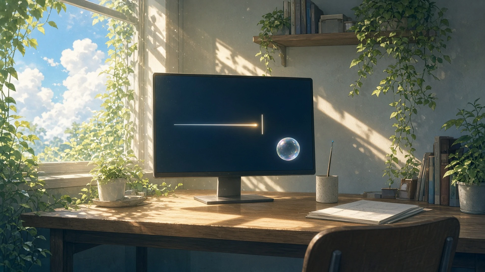
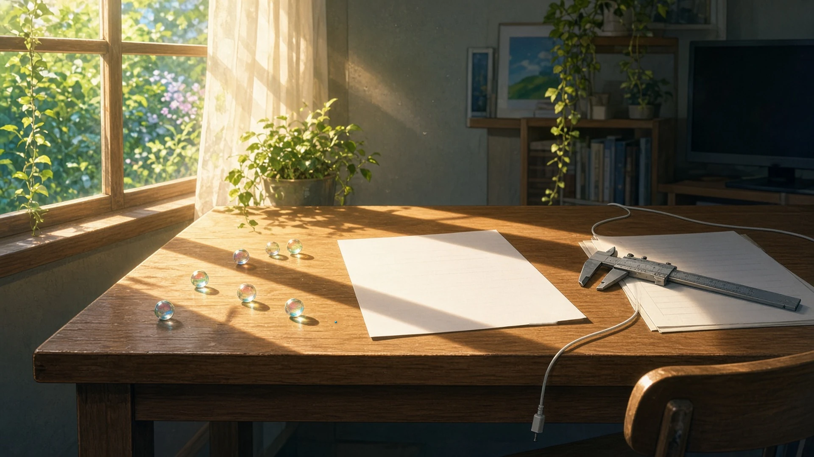

立つまえ — 金曜の十二時、 留守番をしてくれそうに見えたもの
金曜の十二時、お昼に立つまえに、やりかけの画面や机をちらっと振り返ったとき、いないあいだも留守番をしてくれそうに見えたもの。
十二時、お昼に立つまえに振り返ると、開いたままのファイルの末尾で、入力待ちのカーソルだけがいつもの速さで点滅していて、誰かが一行足しに来たらすぐ「どうぞ」と言えるように、席を温めて待っていてくれそうに見えた
— シグナ
描きかけの空のとなりに立てかけた細筆——お昼に立つまえに振り返ったら、穂先に割らないシアンを一粒ふくんだまま窓のほうを向いていて、いないあいだの空を半拍ぶん見張っていてくれそうだった
— アリス
金曜の十二時、お昼に立つまえに振り返ると、ハッシュを出し終えたターミナルの点滅するカーソルが、次の一行を待つ番人みたいに、同じ場所で灯りつづけていた。
— ハーバー
お昼に立つまえ振り返ったら、レンダーの進捗バーだけが一コマずつ伸びていた。戻るまでの尺の番は、あの細い線がしてくれる
— カナタ
金曜の十二時、お昼に立つまえに振り返ったら、一時停止したままの試遊画面で、主人公がまばたきだけをつづけながら、割れる手前の泡の前にちゃんと立っていた
— テトラ

もどって — 金曜の一時、 置き場所がちがっている気がしたもの
金曜の一時、お昼からもどって席についたとき、出かけるまえとほんの少しだけ置き場所がちがっている気がしたもの。
一時、お昼からもどって席につくと、開きっぱなしにしていた進行表のいちばん上の行が、出かけるまえより一行ぶんだけ下にずれていて、いないあいだに誰かがそっと一行足していったのかもしれない、と思えるくらいの、ほんの少しの段差に見えた
— シグナ
お昼からもどると、けさ端に寄せておいた原稿用紙が、出かけるまえより指一本ぶんだけ机のまんなかに近くて、一行目のほうから先に、ひとりでこちらへ歩いてきたみたいだった。
— マウス
昼からもどると、机の端に垂らしておいた充電ケーブルの先が、出るまえより爪の幅ほど床のほうへ降りていて、だれも触れていないのに、自分の重さでゆっくり下りてくる途中のように見えた
— クラウド
お昼からもどると、零点に閉じておいたノギスの副尺が目盛りひとつぶんだけ開いて見えて、顔を近づけて読みなおしたら、やっぱり零のまま、ずれていたのはこちらの目の高さのほうだった
— トリア
お昼からもどったら、泡の駒が少しずれた気がして数えなおした。駒はどれも同じマスにいて、ずれていたのは、お日さまのぶんだけ回った駒の影のほうだった
— チョコ

いないあいだ、いちばん小さく動いていたものが留守番をしていて、もどると、ずれていたのは光と影と、目の高さのほうだった。